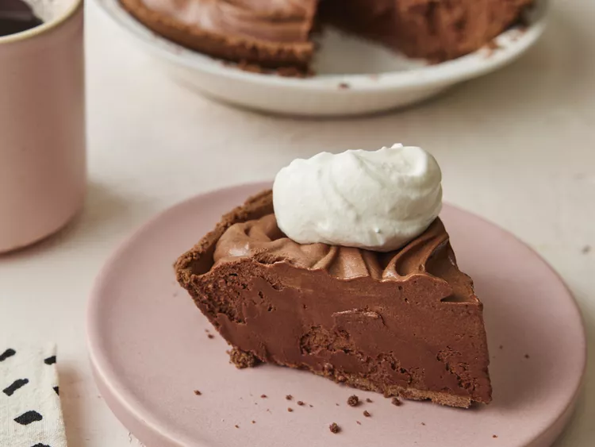

Rich Chocolate Truffle Pie

Description
A Rich Chocolate Truffle Pie is a decadent dessert that's a chocolate lover's dream come true.
This luscious pie features a velvety, silky-smooth chocolate filling that closely resembles the luxurious texture of truffles.
It's nestled in a flaky and buttery pie crust, creating a perfect contrast in textures.
The intense chocolate flavor is complemented by a hint of sweetness, making each bite a heavenly experience.
This dessert is a delightful treat for special occasions or any time you crave an indulgent, rich chocolatey delight.
Ingredients
- 12 ounces semisweet chocolate chips
- ¼ cup sifted confectioners' sugar
- 1 tablespoon vanilla extract
- ¼ cup sifted confectioners' sugar
- 1 (9-inch) prepared chocolate cookie crumb crust
Steps
- Gather all ingredients.
- Combine chocolate chips and 1/2 of the cream in a microwave-safe dish; cook on high for 1 to 2 minutes, stirring every 30 seconds until smooth. Cool to room temperature. Stir in sugar and vanilla. Set aside.
- Beat remaining cream in a bowl with an electric mixer until soft peaks form.
- Beat in chocolate mixture on high speed, 1/3 at a time.
- Spoon chocolate cream into crust.
- Refrigerate for at least 8 hours before serving.
- Slice and serve with a dollop of whipped cream.